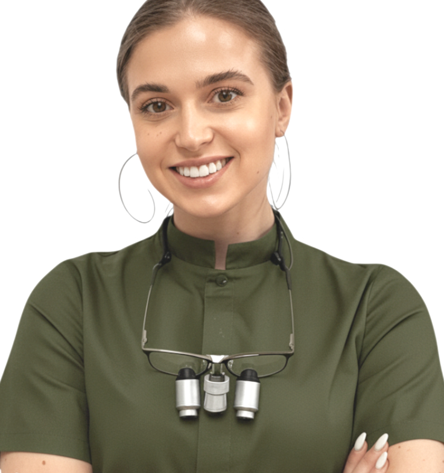
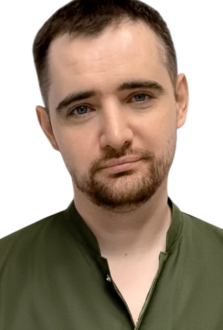
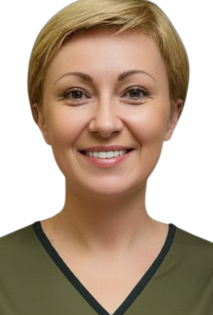

Стаж: 8 років
Маргарита Ігорівна Демянчук
керівник клініки, лікар-терапевт
ВірЮ, що найкраще лікування — це те, яке не потрібне 😏 Тому навчаємо дбати про зуби, а якщо доведеться, вилікуємо ЯКІСНО ТА дбайливо
Лікар надає наступні послуги:
Всі послугиІнформація про лікаря:
Категорія:
Вища
Освіта:
Національний медичний університет ім. О.О. Богомольця
Курси, стажування та членство в асоціаціях
- Invisalign Diamond Provider 2024–2025
- Курси ендодонтії під мікроскопом (Київ, 2024)
Шляхи професійного розвитку:
- володіє англійською та арабською мовами, веде прийом іноземних пацієнтів;
- відвідує міжнародні конференції закордоном.
- «Бути лікарем – це покликання, яке вимагає постійного зростання у професійному плані. Тому потрібно систематично відвідувати семінари, конференції та займатись самоосвітою, читаючи профільну літературу та перевірені медичні сайти.»
Пріоритетні напрями в практичній діяльності:
- діагностика та лікування захворювань шийки матки: кольпоскопія, лазерна вапоризація, радіохвильова терапія, кріодеструкція, конізація шийки матки;
- діагностика та лікування запальних захворювань та захворювань, що передаються статевим шляхом;
- актуальні питання гінекологічної ендокринології;
- індивідуальний підбір методу контрацепції;
- лікування безпліддя;
- ведення нормальної вагітності, а також ускладнень екстрагенітальної патології;
- виконання гінекологічних операцій, а також операцій в галузі інтимної сфери: пластика статевих губ, відновлення дівочої пліви, хірургічна дефлорація.
- пренатальні УЗ - скринінги: доплерометрія і цервікометрія.
- Найбільш поширені скарги: увесь спектр гінекологічних патологій; ускладнення при вагітності.
- «Гарний лікар – це досвідчений, уважний і, головне - людяний спеціаліст. Лікарю завжди важливо пояснити пацієнту усі медичні аспекти, а також донести те, що здоров’я – це багатство, яке потрібно берегти.»
Інші лікарі


Контактна інформація
- Графік роботи:
- Пн–Пт 10–20 | Сб 10–18
- Київ, Солом'янський район (м. Вокзальна), пр. Повітряний Сил, 32/2 (корпус 1)